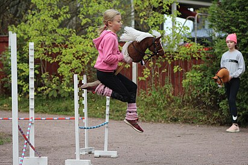

Хоббихорсинг
Хоббихорсинг — «ска́чки» на деревянной палке с лошадиной головой — имеют давнюю историю. Так, они описываются уже в книге XIX века, где говорится о том, что подобное развлечение было традиционным первомайским ритуалом среди рыбаков городка Майнхед[en] в Сомерсетшире, Англия[1]. Однако в течение долгого времени подобные «ска́чки» оставались либо детской забавой, либо чудачеством. Ситуация начала меняться с 2010 года, когда финская девочка-подросток Алиса Аорнимяки сначала сама увлеклась подобными «ска́чками», а затем начала искать и организовывать через социальные сети подруг по подобному увлечению. Через несколько лет в Финляндии образовалась целая субкультура любительниц хоббихорсинга. С 2015 года Алиса стала формировать правила нового вида спорта. В 2017 году на экраны вышел фильм режиссёра Селмы Вилхунен Hobbihorse revolution (с англ. — «Революция хоббихорсинга»), который привлёк внимание к зарождавшемуся виду спорта не только в Финляндии, но и в других странах
